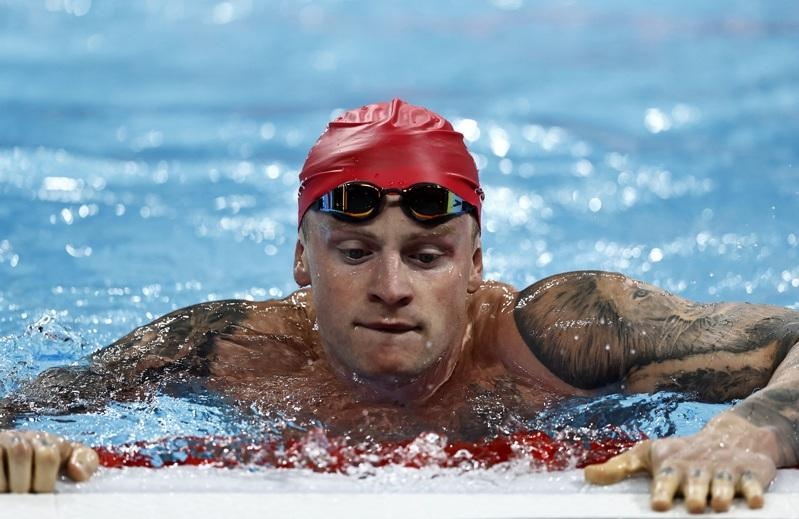

中国赢得巴黎奥运游泳项目男子四百公尺混合式接力后，英国「蛙王」比提（Adam Peaty）表示对制度没有信心，呼吁应进行更严格的药检。英国以第4名作收，未能拿牌。
路透报导，当比提被问及他的说法是否带有愤怒和沮丧时，他在拉德芳斯体育馆（La Defense Arena）向记者表示不仅如此。
比提说：「我认为我们必须对这个制度有信心，但我们并没有。我认为必须更加严格。」
今年4月有消息指出，23名中国游泳选手在2021年东京奥运之前被检测出对违禁药物呈阳性反应，但他们仍获准参赛。自此之后，中国游泳队的选手一直接受严格的药检。
中国的一项调查结果认为队员下榻饭店的厨房受污染，这一解释获得世界反禁药组织（World Anti-Doping Agency，WADA）接受，独立调查的结果也支持WADA对此案的处理方式。
「纽约时报」（The New York Times）上周报导，中国2名游泳选手2022年检测出对违禁类固醇呈阳性反应，但也将检验结果归咎于受污染的食物，让临时禁赛处分得以撤销。
中国反兴奋剂中心（CHINADA）随后指控「纽约时报」将禁药问题政治化，并表示该媒体企图影响参加奥运的中国运动员心理。
比提表示，他不想要一竿子打翻一条船，但报导的这2个案例令人非常失望。
「如果你作弊，那就是诈欺。这与登上颁奖台无关，因为无论谁参加比赛，我在脑中都会期待比赛必须是公平的。」
美国队在今天的接力赛输给中国拿下银牌，生涯奥运金牌数来到第9面的美国队选手德莱赛尔（Caeleb Dressel）对此事的看法相对谨慎。
德莱赛尔被问及是否觉得这是一场光明正大的比赛时，他说：「我们必须信任世界反禁药组织…他们（中国队）更加优秀，就这么简单。」
巴黎奥运热话题
- 麟洋配赛后大合照 李洋「1句话」逗笑马来西亚选手
- 与约克维奇打到抢7落败 阿尔卡拉斯：我有过机会
- 30岁生日礼物 中国刘洋夺金 想吃三鲜馅饺子
- 中国混泳接力夺金 英国蛙王：对药检制度没信心
- 4日赛程 网球男单王者诞生、樊振东力拚桌球男单金牌